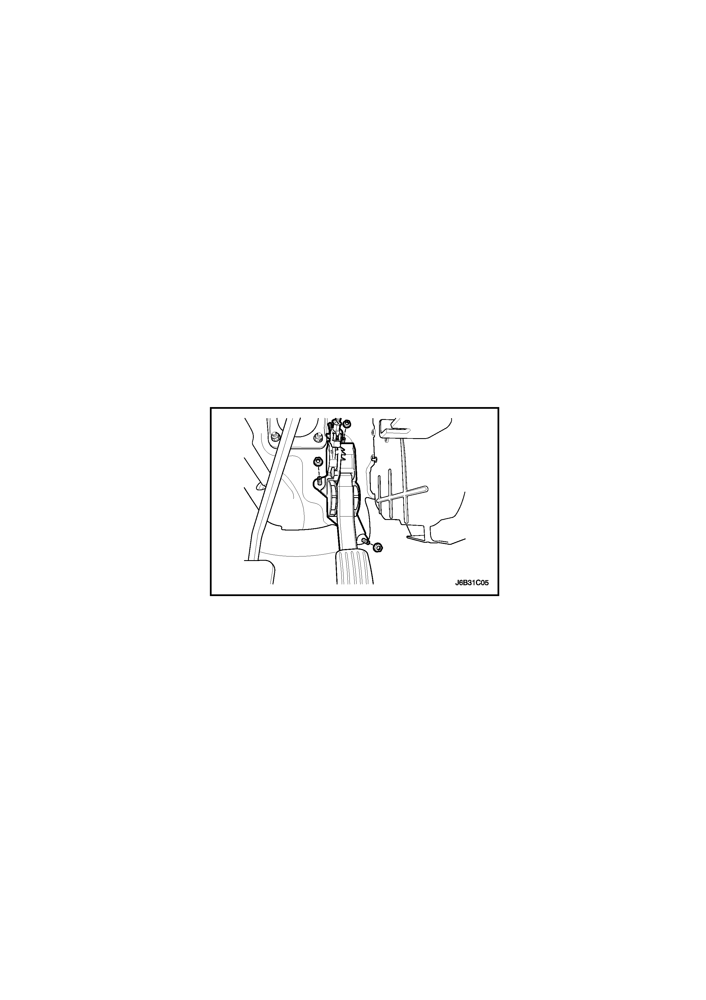

MANTENIMIENTO Y REPARACIÓN
SERVICIO EN VEHÍCULO
Cebado de combustible
Importante: Para que el sistema de combustible diesel VM2.0S funcione correctamente, las líneas de combustible deben estar llenas de combustible, sin presencia de aire. Si se introduce aire en las líneas de combustible, será necesario cebar el sistema para eliminar el aire antes de poner el vehículo en marcha. El aire puede haber accedido al sistema por los siguientes motivos:
- El vehículo se quedó sin combustible.
- El filtro se desmontó para su reparación o sustitución.
- Las líneas de combustible se desmontaron o desconectaron para repararlas.
- La bomba de combustible se desmontó para su reparación.
- El grifo de drenaje de agua del filtro de combustible estaba abierto con el motor en marcha.
Si se ha producido alguna de las circunstancias descritas arriba, ha entrado aire en el sistema de combustible y es necesario cebarlo antes de poner el vehículo en marcha.
- Gire la llave de contacto a la posición ON en intervalos de 5 segundos.
Precaución: No gire la llave de contacto a la posición START, podría dañar la bomba de inyección.
- Gire la llave de contacto a la posición OFF y espere 3 segundos.
- Repita los pasos 1 y 2 durante 6 o 7 veces.
Aviso: Puede realizar el trabajo de cebado de combustible con ayuda de un scanner.


Depósito de combustible
Procedimiento de desmontaje
Precaución: No permita fumar ni el uso de llamas desnudas en el área donde se trabaja con el sistema de combustible. Siempre que trabaje con el sistema de combustible, desconecte el cable negativo de la batería, excepto en el caso de pruebas en las que se necesite tensión de la batería.
- Desconecte el cable negativo de la batería.
- Desenchufe el conector de la bomba de combustible. Consulte el apartado "Conjunto de la bomba de combustible"de esta sección.
- Vacíe el depósito de combustible.
- Desmonte el tubo de escape trasero.

- Quite la abrazadera del tubo de llenado del depósito de combustible.
- Desconecte el tubo de llenado del depósito de combustible.
- Desconecte la tubería de vapor de combustible que hay cerca del tubo de llenado del depósito.
- Desenchufe el conector del cableado de la bomba de combustible.

- Desconecte la tubería de entrada de combustible situada cerca de la parte delantera derecha del depósito de combustible.

- Apoye adecuadamente el depósito de combustible.
- Quite las tuercas de fijación de las abrazaderas del depósito de combustible.
- Quite las tuercas de fijación del cable del freno de mano.
- Quite la abrazadera del depósito de combustible.
- Baje cuidadosamente el depósito de combustible.
- Desmonte el depósito de combustible.
- Sustituya cualquier pieza defectuosa si fuera necesario.
procedimiento de montaje
- Ponga el depósito de combustible en posición.
- Monte las abrazaderas del depósito de combustible.
- Ponga las tuercas de fijación de las abrazaderas del depósito de combustible.
Apretar
Apriete las tuercas de fijación de las abrazaderas del depósito de combustible hasta 20 N•m (15 lb-pie).
- Coloque las tuercas de fijación del cable del freno de mano.
Apretar
Apriete las tuercas de fijación del cable del freno de mano hasta 20 N•m (15 lb-pie).
- Conecte la tubería de salida de combustible.
- Enchufe el conector del cableado de la bomba de combustible.
- Ponga la abrazadera del tubo de llenado en el depósito de combustible.
- Monte el tubo de escape trasero.
Apretar
Apriete las tuercas del tubo de escape trasero hasta 40 N•m (29,5 lb-pie).
- Llene el depósito de combustible.
- Efectúe una comprobación de fugas en el depósito de combustible y las conexiones de las tuberías de combustible.
- Realice el cebado de combustible. Consulte el apartado "Cebado de combustible"de esta sección.
conjunto de la bomba de combustible
Procedimiento de desmontaje
- Desconecte el cable negativo de la batería.
- Pliegue el asiento trasero.
- Coloque las tapas de acceso a la bomba de combustible.
- Desenchufe el conector eléctrico del conjunto de la bomba de combustible.
- Desconecte la tubería de salida de combustible.
- Gire el anillo de retención en sentido contrario al de las agujas del reloj para despejar las lengüetas de sujeción del depósito.
- Desmonte del depósito el conjunto de la bomba de combustible.

procedimiento de montaje
- Limpie la superficie de asiento de la junta del depósito de combustible.
- Coloque en su lugar la nueva junta.
- Monte la bomba de combustible en el depósito en el mismo lugar en que se desmontó para facilitar el montaje del conector y de la tubería.
- Coloque el anillo de retención en su lugar y hágalo girar en el sentido de las agujas del reloj hasta que haga contacto con el tope del depósito.
- Enchufe el conector del conjunto de la bomba de combustible.
- Instale la tubería de salida de la bomba de combustible.
- Ponga la tapa de acceso a la bomba de combustible.
- Conecte el cable negativo de la batería.
- Efectúe una comprobación del funcionamiento de la bomba de combustible.
- Monte el asiento trasero. Consulte la Sección 9H, Asientos.
- Realice el cebado de combustible. Consulte el apartado "Cebado de combustible"de esta sección.
Transmisor de combustible
Proceso de sustitución
- Desmonte el conjunto de la bomba de combustible. Consulte el apartado "Bomba de combustible"de esta sección.
Precaución: Tire de los conectores presionando la lengüeta de seguridad con ayuda de un destornillador plano.
- Desenchufe el conector del transmisor de combustible del conjunto de la bomba de combustible.
Importante: Tire del soporte presionando la lengüeta de seguridad del lado derecho con ayuda de un destornillador plano.
- Extraiga el soporte del conjunto del transmisor de combustible del conjunto de la bomba de combustible.

Importante: Tire del cuerpo del transmisor presionando la lengüeta de seguridad con ayuda de un destornillador plano.
- Deslice hacia afuera el transmisor de combustible para extraerlo.
- Instale el transmisor de combustible en el orden inverso en que se extrajo.
- Instale el conjunto de la bomba de combustible en el depósito de combustible. Consulte el apartado "Bomba de combustible" de esta sección.
Filtro de combustible/Agua en el sensor de combustible/Sensor de temperatura y calefactor del combustible
Herramientas necesarias
Soporte de la carcasa del filtro de combustible EN-48303
Extractor/instalador del armario del filtro de combustible EN-48304
Procedimiento de desmontaje
Precaución: No permita fumar ni el uso de llamas desnudas en el área donde se trabaja con el sistema de combustible. Siempre que trabaje con el sistema de combustible, desconecte el cable negativo de la batería, excepto en el caso de pruebas en las que se necesite tensión de la batería.
- Desconecte el cable negativo de la batería.
- Retire la tapa embellecedora. Consulte la sección 1B, Mecánica del motor - 2.0 Diesel.
- Desmonte la batería, consulte la Sección 1E2, Sistema eléctrico del motor - 2.0 Diesel.

- Desconecte, del filtro de combustible, la tubería de entrada/salida de combustible.
- Desenchufe el conector del sensor de temperatura y el calefactor de combustible.
- Desmonte el conjunto del filtro de combustible con el soporte.
- Desenchufe el sensor de agua en el combustible.
- Desmonte el filtro de combustible del soporte.
- Instale el soporte de la carcasa del filtro EN-48303 (a) y el extractor/instalador del armario del filtro EN-48304 (b) en el conjunto del filtro de combustible.
- Gire el extractor/instalador del armario del filtro de combustible EN-48304(b) en el sentido contrario a las agujas del reloj.
- Desmonte el armario (a) del filtro del combustible.
- Desmonte el tapón (b) del filtro de combustible con su junta tórica (c).
- Desmonte el filtro de combustible (d) de la carcasa (e).
Aviso: El tapón del filtro de combustible incluye calefactor de combustible y sensor de temperatura en un único cuerpo. Además, la carcasa del filtro de combustible incluye el sensor de agua en combustible.
Procedimiento de drenaje de agua
- Gire el tornillo de drenaje del agua en el combustible en sentido contrario a las agujas del reloj.
- Cuando termine, quite el tornillo de drenaje desenroscándolo hacia el lado contrario.
- Realice el cebado de combustible. Consulte el apartado "Cebado de combustible" de esta sección.
procedimiento de montaje
- Monte el filtro de combustible (d) en la carcasa (e).
- Monte el tapón (b) del filtro de combustible con una nueva junta tórica (c).
- Instale el armario del filtro de combustible (a) mediante el soporte EN-48303 y el extractor/instalador del armario del filtro de combustible EN-48304.
Apretar
Apriete el armario del filtro de combustible hasta 30 N•m (22 lb-pie).
- Monte el filtro de combustible al soporte.
- Monte el conjunto del soporte del filtro de combustible a la carrocería.
Apretar
Apriete la tuerca y los tornillos de fijación del soporte del filtro de combustible hasta 10 N•m (88,5 lb-pulg.).
Tubos de alimentación de combustible de alta presión.
Procedimiento de desmontaje
Precaución: No permita fumar ni el uso de llamas desnudas en el área donde se trabaja con el sistema de combustible. Siempre que trabaje con el sistema de combustible, desconecte el cable negativo de la batería, excepto en el caso de pruebas en las que se necesite tensión de la batería.
- Retire la tapa embellecedora. Consulte la sección 1B, Mecánica del motor - 2.0 Diesel.
- Desmonte el sistema del aire de carga. Consulte la sección 1B, Mecánica del motor - 2.0 Diesel.
- Mientras sostiene el conector del tubo del inyector (a), quite la tuerca de fijación (M14) de la tubería de combustible al inyector.
- Para evitar derrames de combustible o daños en el conector del tubo del inyector, sujete el conector del tubo del inyector con ayuda de herramientas y quite la tuerca del tubo. A continuación, inmediatamente después de retirar las líneas de combustible, coloque un tapón en el conector del inyector para evitar que se contamine con polvo. La presencia de polvo puede taponar los inyectores.
- Mientras sostiene el conector de la bomba de inyección (a), quite la tuerca de fijación (M14) de la tubería de combustible a la rampa de inyectores común.
Precaución: Para evitar derrames de combustible o daños en el conector del tubo de la bomba de inyección, sujete el conector de la bomba de inyección con ayuda de una herramienta mientras desenrosca la tuerca de fijación (M14) de la tubería de combustible a la rampa de inyectores común. A continuación, inmediatamente después de retirar las líneas de combustible, coloque un tapón en el conector del tubo de inyección para evitar que entre polvo. La presencia de polvo puede taponar los inyectores.

- Quite la tuerca de fijación (M17) del tubo de combustible a la rampa de inyectores común.
- Quite el tornillo de fijación del tubo de combustible a la rampa de inyectores común, en la caja del termostato.
- Desmonte las líneas de combustible que van a la rampa de inyectores común y a los tubos del inyector.
Precaución: Inmediatamente después de retirar las roscas, coloque un tapón en la rosca de los tubos de la rampa de inyectores común para evitar que se contamine con polvo. La presencia de polvo puede taponar los inyectores.
procedimiento de montaje
Importante: No es posible reutilizar las líneas de combustible. Si se reutilizan, la suciedad podría dañar los inyectores o producir fugas en las tuberías.
Precaución:
- No limpie con una pistola de aire comprimido los conectores de los tubos de los inyectores, la bomba de inyección y las roscas del tubo de la rampa de inyectores común. Si están contaminados, limpie el área afectada con papel aceitado.
- No limpie con una toallita los conectores de los tubos de los inyectores, la bomba de inyección y las roscas del tubo de la rampa de inyectores común. Si están contaminados, limpie el área afectada con papel aceitado.
- Si está contaminada, limpie la rosca del tubo de la rampa de inyectores común con papel aceitado.
- Afloje los tornillos del soporte del inyector. Consulte el apartado "Inyector" de esta sección.
- Monte las líneas de combustible y apriete manualmente las tuercas situadas entre los inyectores y la rampa de inyectores común.
Precaución: No apriete las tuercas de la tubería de combustible con una herramienta.
- Apriete los tornillos del soporte del inyector.
Apretar
Apriete el tornillo del soporte del inyector hasta 28 N•m (20,7 lb-pie).
- Mientras sostiene el conector del tubo del inyector (a), apriete la tuerca de fijación (M14) de la tubería de combustible al inyector.
Apretar
Apriete la tuerca de fijación (M14) de la tubería de combustible al inyector hasta 27 N•m (19,9 lb-pie).
- Apriete la tuerca de fijación (M17) de la tubería de combustible al inyector.
Apretar
Apriete la tuerca de fijación (M17) de la tubería de combustible al inyector hasta 20 N•m (14,8 lb-pie).
- Monte la tubería de combustible y apriete las tuercas entre rampa de inyectores común y la bomba de inyección manualmente.
Precaución: No apriete las tuercas de la tubería de combustible con una herramienta.
- Sujete el el conector (a) del tubo de la bomba de inyección mientras aprieta la tuerca de fijación (M14) de la tubería de combustible a la rampa de inyectores común.
Apretar
Apriete la tuerca de fijación (M14) de la tubería de combustible a la rampa de inyectores común hasta 20 N•m (14,8 lb-pie).
- Apriete la tuerca de fijación (M17) de la tubería de combustible a la rampa de inyectores común.
Apretar
Apriete la tuerca de fijación (M17) de la tubería de combustible a la rampa de inyectores común hasta 20 N•m (14,8 lb-pie).
Bomba de inyección de combustible
Procedimiento de desmontaje
Precaución: No permita fumar ni el uso de llamas desnudas en el área donde se trabaja con el sistema de combustible. Siempre que trabaje con el sistema de combustible, desconecte el cable negativo de la batería, excepto en el caso de pruebas en las que se necesite tensión de la batería.
- Desmonte las líneas de combustible de alta presión. Consulte el apartado "Tubos de alimentación de combustible de alta presión" de esta sección.

- Desmonte el colector de admisión. Consulte la sección 1B, Mecánica del motor - 2.0 Diesel.
- Desmonte la correa de distribución. Consulte la sección 1B, Mecánica del motor - 2.0 Diesel.
- Desmonte la bomba de la dirección asistida. Consulte la Sección 6B, Bomba de la dirección asistida.
Precaución: Inmediatamente después de retirar las líneas de combustible, coloque un tapón en el conector del tubo de la bomba de inyección para evitar que se contamine con polvo. La presencia de polvo puede taponar los inyectores.
- Desmonte el piñón de la bomba de inyección con la chaveta de media luna.
- Desmonte el conjunto de la bomba de inyección.
procedimiento de montaje
Importante: No es posible reutilizar las líneas de combustible. Si se reutilizan, la suciedad podría dañar los inyectores o producir fugas en las tuberías.
Precaución:
- No limpie con una pistola de aire comprimido los conectores de los tubos de los inyectores, la bomba de inyección y las roscas del tubo de la rampa de inyectores común. Si están contaminados, limpie el área afectada con papel aceitado.
- No limpie con una toallita los conectores de los tubos de los inyectores, la bomba de inyección y las roscas del tubo de la rampa de inyectores común. Si están contaminados, limpie el área afectada con papel aceitado.
- Monte el conjunto de la bomba de inyección.
Apretar
Apriete los tornillos de la bomba de inyección hasta 30 N•m (22,1 lb-pie).
- Coloque la ranura de la chaveta de media luna del eje de accionamiento de la bomba de inyección.
- Monte el piñón de la bomba de inyección.
- Instálelo manualmente.

- Alinee la marca del piñón con la marca de la tapa trasera de la correa de distribución.
- Monte y alinee la correa de distribución. Consulte la Sección 1B, Mecánica del motor - 2.0 Diesel.
- Coloque la tuerca del piñón de la bomba de inyección.
Apretar
Apriete la tuerca del piñón de la bomba de inyección hasta 70 N•m (51,6 lb-pie).
- Realice el cebado de combustible. Consulte el apartado "Cebado de combustible"de esta sección.
Rampa de inyectores común
Precaución: No permita fumar ni el uso de llamas desnudas en el área donde se trabaja con el sistema de combustible. Siempre que trabaje con el sistema de combustible, desconecte el cable negativo de la batería, excepto en el caso de pruebas en las que se necesite tensión de la batería.
Procedimiento de desmontaje
- Desconecte el cable negativo de la batería.
- Desenchufe el conector del sensor de presión de la rampa de inyectores común.
- Desenchufe el conector del regulador de la rampa de inyectores común.
- Desconecte el manguito de retorno de la rampa de inyectores común.
- Desconecte la guía del cableado del motor del colector de admisión.
- Desmonte las líneas de combustible de alta presión. Consulte el apartado "Tubos de alimentación de combustible de alta presión" de esta sección.
- Desmonte el conjunto de la rampa de inyectores de común.
Precaución: Inmediatamente después de retirar las líneas de combustible, coloque un tapón en las roscas del tubo de la rampa de inyectores común para evitar que se contamine con polvo. La presencia de polvo puede taponar los inyectores.
procedimiento de montaje
Importante: No es posible reutilizar las líneas de combustible. Si se reutilizan, la suciedad podría dañar los inyectores o producir fugas en las tuberías.
Precaución:
- No limpie con una pistola de aire comprimido los conectores de los tubos de los inyectores, la bomba de inyección y las roscas del tubo de la rampa de inyectores común. Si están contaminados, limpie el área afectada con papel aceitado.
- No limpie con una toallita los conectores de los tubos de los inyectores, la bomba de inyección y las roscas del tubo de la rampa de inyectores común. Si están contaminados, limpie el área afectada con papel aceitado.
- Monte el conjunto de la rampa de inyectores común.
Apretar
Apriete los tornillos de fijación de la rampa de inyectores común hasta 25 N•m (18,4 lb-pie).
- Monte las líneas de combustible en la rampa de inyectores común. Consulte el apartado "Tubos de alimentación de combustible de alta presión" de esta sección.
- Enchufe el conector del sensor de presión de la rampa de inyectores común.
- Enchufe el conector del regulador de la rampa de inyectores común.
- Realice el cebado de combustible. Consulte el apartado "Cebado de combustible" de esta sección.
Sensor de presión de la rampa de inyectores común
Precaución: No permita fumar ni el uso de llamas desnudas en el área donde se trabaja con el sistema de combustible. Siempre que trabaje con el sistema de combustible, desconecte el cable negativo de la batería, excepto en el caso de pruebas en las que se necesite tensión de la batería.
Procedimiento de desmontaje
- Desmonte el conjunto de la rampa de inyectores de común. Consulte el apartado "Rampa de inyectores común" de esta sección.
- Limpie el área de interfaz del sensor de presión de la rampa de inyectores con los materiales desengrasantes adecuados y séquela con aire comprimido.
Aviso: El material de limpieza no debe penetrar en el conector eléctrico.
- Desmonte el sensor de presión de la rampa de inyectores con su junta, si dispone del mismo.
Precaución: Inmediatamente después de retirar las líneas de combustible, coloque un tapón en el sensor de presión de la rampa de inyectores común para evitar que se contamine con polvo. La presencia de polvo puede taponar los inyectores.
procedimiento de montaje
Precaución:
- No limpie con una pistola de aire comprimido los conectores de los tubos de los inyectores, la rampa de inyectores común y la bomba de inyección. Si están contaminados, limpie el área afectada con papel aceitado.
- No limpie con una toallita los conectores de los tubos de los inyectores, la rampa de inyectores común y la bomba de inyección. Si están contaminados, limpie el área afectada con papel aceitado.
- Compruebe las roscas y la superficie de cierre de la rampa de inyectores común y límpielas si es necesario.
- Revise y limpie la rosca del sensor de presión de la rampa de inyectores.
- Lubrique la rosca (a) y el borde (b) del sensor de presión de la rampa de inyectores con lubricante Ft1v27 (aplique una capa fina).
- Monte el sensor de presión de la rampa de inyectores en la rampa de inyectores común.
Apretar
Apriete el sensor de presión de la rampa de inyectores hasta 70 N•m (51,6 lb-pie)
- Realice el cebado de combustible. Consulte el apartado "Cebado de combustible"de esta sección.
- Si sustituye el elemento, restablezca los valores de la EEPROM de corrección de combustible cero (ZFC) con ayuda del scanner.
Regulador de la rampa de inyectores común
Precaución: No permita fumar ni el uso de llamas desnudas en el área donde se trabaja con el sistema de combustible. Siempre que trabaje con el sistema de combustible, desconecte el cable negativo de la batería, excepto en el caso de pruebas en las que se necesite tensión de la batería.
Procedimiento de desmontaje
- Desmonte el conjunto de la rampa de inyectores de común. Consulte el apartado "Rampa de inyectores común" de esta sección.
- Limpie el área de interfaz del regulador de la rampa de inyectores con los materiales desengrasantes adecuados y séquela con aire comprimido.
Aviso: El material de limpieza no debe penetrar en el conector eléctrico.
- Afloje el componente con una llave de apriete comercial WAF30, sujétela con la mano y tire hacia fuera simultáneamente a la vez que la gira en el sentido contrario a las agujas del reloj.
procedimiento de montaje
Importante: El regulador de la rampa de inyectores común no debe reutilizarse.
Precaución:
- No limpie con una pistola de aire comprimido los conectores de los tubos de los inyectores, la bomba de inyección y las roscas del tubo de la rampa de inyectores común. Si están contaminados, limpie el área afectada con papel aceitado.
- No limpie con una toallita los conectores de los tubos de los inyectores, la bomba de inyección y las roscas del tubo de la rampa de inyectores común. Si están contaminados, limpie el área afectada con papel aceitado.
- Compruebe las roscas y la superficie de cierre de la rampa de inyectores común y límpielas si es necesario.
- Compruebe la rosca (a) y el borde (b) del regulador de la rampa de inyectores común y límpielas si es necesario.
Aviso: Inspeccione las superficies de cierre del DRV, la rampa de inyectores y la bomba de alta presión. Sólo se permiten las ranuras concéntricas. No se toleran los cortes en dirección radial. Compruebe si los tornillos Torx o el tornillo de la brida están dañados.
- Lubrique las juntas tóricas con combustible.
- Monte el regulador de la rampa de inyectores común con una llave de apriete comercial WAF30, interactuando a la vez con una llave WAF35 en el hexágono de la carcasa.
Apretar
Apriete el regulador de la rampa de inyectores común hasta 60 N•m (44,3 lb-pie) y gírelo 90 grados en la dirección opuesta y apriete hasta 85 N•m (62,7 lb-pie).
- Realice el cebado de combustible. Consulte el apartado "Cebado de combustible"de esta sección.
Conjunto de la tubería de retorno de combustible
Precaución: No permita fumar ni el uso de llamas desnudas en el área donde se trabaja con el sistema de combustible. Siempre que trabaje con el sistema de combustible, desconecte el cable negativo de la batería, excepto en el caso de pruebas en las que se necesite tensión de la batería.
Procedimiento de desmontaje
- Desmonte el manguito de retorno del inyector.
Importante: No tire del clip hacia fuera, empújelo a la vez que desconecta los manguitos de retorno del inyector. Una vez que se ha desmontado del inyector, no se puede reutilizar el clip.

- Desconecte el manguito de retorno de la bomba de inyección.
- Desconecte el manguito de retorno de la rampa de inyectores común.
- Quite los tornillos de fijación de la caja de conexiones.
- Desmonte el conjunto de la tubería de retorno de combustible.
procedimiento de montaje
- Monte el conjunto de la tubería de retorno de combustible.
- Conecte el manguito de retorno de la rampa de inyectores común.
- Conecte el manguito de retorno de la bomba de inyección.
Importante: No es necesario conectar los manguitos de retorno del inyector a los inyectores. Empuje el clip a la vez que conecta los manguitos de retorno del inyector.
- Monte la caja de conexiones.
Apretar
Apriete los tornillos de fijación de la caja de conexiones hasta 11 N•m (97,4 lb-pulg.).
inyector
Herramientas necesarias
Extractor de inyectores EN-48357
Precaución: No permita fumar ni el uso de llamas desnudas en el área donde se trabaja con el sistema de combustible. Siempre que trabaje con el sistema de combustible, desconecte el cable negativo de la batería, excepto en el caso de pruebas en las que se necesite tensión de la batería.
Procedimiento de desmontaje
- Desconecte el cable negativo de la batería.
- Retire los tubos de combustible de alta presión. Consulte el apartado "Tubos de alimentación de combustible de alta presión" de esta sección.
- Desmonte los manguitos de retorno del inyector. Consulte el apartado "Conjunto de la tubería de retorno de combustible" de esta sección.
- Desenchufe el conector del inyector.
- Retire el tapón del soporte del inyector.
- Quite el tornillo del soporte del inyector.
- Tire del soporte hacia afuera manualmente.
- Desmonte los inyectores con la arandela, tirando de ellos hacia arriba.
Precaución:
- Numero los inyectores con un lápiz siguiendo una secuencia. Si se mezclan los números de los inyectores, se verá afectado el rendimiento del motor.
- Asegure la punta de la boquilla del inyector en el suelo o en una zona rígida. Si es posible, coloque un tapón en la punta de la boquilla.
- Si el inyector está pegado a la culata, utilice el extractor de inyectores EN-48357.
procedimiento de montaje
Precaución: No debe reutilizarse la arandela del inyector.
- Limpie la punta de la boquilla de los inyectores si es necesario.
Precaución: No limpie la zona de la punta de la boquilla. Podría dañar el orificio de la boquilla.
- Monte el inyector con una arandela nueva.
- Introduzca el soporte del inyector en la ranura.
- Apriete el tornillo del soporte del inyector.
Apretar
Apriete el tornillo del soporte del inyector hasta 28 N•m (20,7 lb-pie).
- Coloque el tapón del soporte del inyector.
Apretar
Apriete el tornillo del tapón del soporte del inyector hasta 7 N•m (62,0 lb-pulg.).
Importante: No es posible reutilizar las líneas de combustible. Si se reutilizan, la suciedad podría dañar los inyectores o producir fugas en las tuberías.
- Realice el cebado de combustible. Consulte el apartado "Cebado de combustible"de esta sección.
Importante: Si se sustituye el inyector o se varía la secuencia de inyectores, vuelva a programar los inyectores con ayuda de un scanner.

Módulo del pedal acelerador (APM)
Procedimiento de desmontaje
- Gire el interruptor de contacto a la posición OFF (desconectado).
- Desenchufe el conector del control de mariposa electrónica (ETC) del APM.
- Quite los tornillos (3) que sujetan el APM a su soporte.
procedimiento de montaje
- El procedimiento de montaje debe ser el mismo que el procedimiento de desmontaje, pero en orden inverso.
- Apriete los tornillos de fijación del APM a su soporte.
Apretar
Apriete los tornillos de fijación del APM hasta 16 ~ 22 N•m (11,80 ~ 16,23 lb-pie).

Sensor de flujo de aire másico (MAF)
Procedimiento de desmontaje y montaje
- Desconecte el cable negativo de la batería.
- Desenchufe el conector del sensor MAF.
- Desmonte el sensor de MAF.
Control de acelerador electrónico (ETC)
Procedimiento de desmontaje y montaje
- Desconecte el cable negativo de la batería.
- Retire la tapa embellecedora. Consulte la sección 1B, Mecánica del motor - 2.0 Diesel.
- Desmonte el manguito de salida del refrigerador del aire de carga. Consulte la sección 1B, Mecánica del motor - 2.0 Diesel.
- Desenchufe el conector de ETC.
- Desmonte el ETC.
Apretar
Apriete los tornillos y las tuercas de fijación del ECT hasta 9 N•m (79,7 lb-pie).
Sensor de posición del árbol de levas (CMP)
Procedimiento de desmontaje y montaje
- Desconecte el cable negativo de la batería.
- Retire la tapa embellecedora. Consulte la sección 1B, Mecánica del motor - 2.0 Diesel.
- Quite el tornillo de fijación de la caja de conexiones. Consulte el apartado "Conjunto de la tubería de retorno de combustible" de esta sección.
- Desenchufe el conector del sensor de CMK.
- Desmonte el sensor de CMK.
Apretar
Apriete el tornillo de fijación del sensor de CMK hasta 7 N•m (62 lb-pulg.).
Bomba de vacío
Procedimiento de desmontaje
- Desconecte el cable negativo de la batería.
- Retire la tapa embellecedora. Consulte la sección 1B, Mecánica del motor - 2.0 Diesel.
- Desmonte el filtro de combustible. Consulte el apartado "Filtro de combustible/Agua en el sensor de combustible/Sensor de temperatura y calefactor del combustible" de esta sección.
- Desconecte del soporte el cableado del motor.
- Desmonte el soporte del cableado del motor.
- Desconecte el EGR y los manguitos de vacío del servofreno.

- Desmonte la bomba de vacío.
procedimiento de montaje
- Monte la bomba de vacío.
Apretar
Apriete los tornillos de fijación de la bomba de vacío hasta 12 N•m (8,9 lb-pie).
- Monte el soporte del cableado del motor.
- Conecte el EGR y los manguitos de vacío del servofreno.
Apretar
Apriete las tuercas del soporte del cableado del motor hasta 20 N•m (14,8 lb-pie).
Sensor de presión de sobrealimentación (sensor T-MAP)
Procedimiento de desmontaje y montaje
- Desconecte el cable negativo de la batería.
- Desmonte la tapa embellecedora. Consulte la sección 1B, Mecánica del motor - 2.0 Diesel.
- Desenchufe el conector del sensor de presión de sobrealimentación.
- Tire hacia arriba de la tapa del cableado del motor para retirarla.
- Desmonte el sensor de presión de sobrealimentación.
Apretar
Apriete el tornillo del sensor de presión de sobrealimentación hasta 8 N•m (70,8 lb-pulg.).
Sensor de temperatura del refrigerante del motor (ECT)
Procedimiento de desmontaje y montaje
- Desconecte el cable negativo de la batería.
- Desmonte la tapa embellecedora. Consulte la sección 1B, Mecánica del motor - 2.0 Diesel.
- Desenchufe el conector del ETC.
- Desmonte el sensor de ETC.
Apretar
Apriete el sensor de ECT hasta 35 N•m (25,8 lb-pie).
Sensor de posición del cigüeñal (CKP)
Procedimiento de desmontaje y montaje
- Desconecte el cable negativo de la batería.
- Desenchufe el conector del CKP.
- Desmonte el sensor de CKP.
Apretar
Apriete el tornillo de retención del sensor de CKP hasta 7 N•m (62 lb-pulg.).
Presostato (interruptor de presión) del aceite
Procedimiento de desmontaje y montaje
- Desconecte el cable negativo de la batería.
- Vacíe el aceite del motor.
- Desenchufe el conector del presostato del aceite.
- Retire el presostato del aceite.
Apretar
Apriete el presostato del aceite hasta 30 N•m (22,1 lb-pie).
Válvula solenoide de vacío de EGR
Procedimiento de desmontaje y montaje
- Desconecte el cable negativo de la batería.
- Desmonte la tapa embellecedora. Consulte la sección 1B, Mecánica del motor - 2.0 Diesel.
- Desconecte los manguitos de entrada/salida de la válvula solenoide de vacío de EGR.
- Desenchufe el conector de la válvula solenoide de vacío de EGR.
- Desmonte la válvula solenoide de vacío de EGR.
Apretar
Apriete los tornillos de fijación de la válvula solenoide de vacío de EGR hasta 7 N•m (62 lb-pulg.).
Depósito de vacío de EGR
Procedimiento de desmontaje y montaje
- Desconecte el cable negativo de la batería.
- Desmonte la tapa embellecedora. Consulte la sección 1B, Mecánica del motor - 2.0 Diesel.
- Desconecte del depósito de vacío los manguitos de entrada/salida de vacío.
- Desmonte el depósito de vacío de EGR del soporte del alternador.
Apretar
Apriete las tuercas de fijación del depósito de vacío de EGR hasta 10 N•m (88,5 lb-pulg.).
Refrigerador y válvula de EGR
Procedimiento de desmontaje y montaje
Precaución: Asegúrese de que los componentes están fríos. Realice el trabajo.
- Desconecte el cable negativo de la batería.
- Desmonte la tapa embellecedora. Consulte la sección 1B, Mecánica del motor - 2.0 Diesel.
- Desmonte el filtro de combustible. Consulte el apartado "Filtro de combustible/Agua en el sensor de combustible/Sensor de temperatura y calefactor del combustible" de esta sección.
- Vacíe el refrigerante del motor. Consulte la Sección 1D1, "Refrigeración del motor - 2.0 Diesel.
- Desconecte del soporte el cableado del motor.
- Desmonte el soporte del cableado del motor.
- Desconecte del refrigerador de EGR los manguitos de entrada/salida de refrigeración.
- Desmonte el refrigerador de EGR.
- Desmonte la válvula EGR.
procedimiento de montaje
- Monte la válvula EGR.
Apretar
Apriete los tornillos de la válvula de EGR hasta 20 N•m (14,8 lb-pie).
- Monte el refrigerador de EGR.
Apretar
- Apriete el tornillo de fijación del refrigerador de EGR hasta 20 N•m (14,8 lb-pie).
- Apriete los tornillos del refrigerador de EGR hasta 20 N•m (14,8 lb-pie).
- Monte el soporte del cableado del motor.
Apretar
Apriete las tuercas de fijación del soporte del cableado del motor hasta 20 N•m (14,8 lb-pie).
Turbocompresor
Procedimiento de desmontaje y montaje
Precaución: Asegúrese de que los componentes están fríos. Realice el trabajo.
- Desconecte el cable negativo de la batería.
- Desmonte la tapa embellecedora. Consulte la sección 1B, Mecánica del motor - 2.0 Diesel.
- Desmonte los conductos y manguitos del sistema de aire de carga. Consulte la sección 1B, Mecánica del motor - 2.0 Diesel.

- Desmonte la válvula y el adaptador de PCV. Consulte la sección 1B, Mecánica del motor - 2.0 Diesel.
- Desmonte el convertidor del precatalizador. Consulte la Sección 1G2, Sistema de escape del motor-2.0 Diesel.

- Retire el manguito de vacío del turbocompresor.
- Desmonte el tubo de entrada de aceite del cojinete de la rueda del turbocompresor.
- Desconecte el manguito de salida de aceite del cojinete de la rueda del turbocompresor.
- Desmonte el turbocompresor.
procedimiento de montaje
- Monte el turbocompresor en el colector de escape.
- Monte el tubo de entrada de aceite del cojinete de la rueda del turbocompresor.
- Conecte el manguito de salida de aceite del cojinete de la rueda del turbocompresor.
Apretar
- Apriete las tuercas de fijación del turbocompresor hasta 34 N•m (25,1 lb-pie).
- Apriete los tornillos del tubo de entrada de aceite del cojinete de la rueda del turbocompresor hasta 23 N•m (17 lb-pie).
Válvula solenoide y depósito de vacío del turbocompresor
Procedimiento de desmontaje y montaje
- Desconecte el cable negativo de la batería.
- Desenchufe el conector de la válvula solenoide.
- Retire el manguito de vacío de la válvula solenoide.
- Desconecte el manguito de vacío del depósito de vacío.
- Desmonte la válvula solenoide y el depósito de vacío.
Apretar
Apriete la tuerca de fijación de la válvula solenoide hasta 10 N•m (88,5 lb-pulg.).
Bujía de precalentamiento
Procedimiento de desmontaje
Precaución: Asegúrese de que los componentes están fríos. Realice el trabajo.
- Desconecte el cable negativo de la batería.
- Desmonte la tapa embellecedora. Consulte la sección 1B, Mecánica del motor - 2.0 Diesel.
- Desmonte los conductos y manguitos del sistema de aire de carga. Consulte la sección 1B, Mecánica del motor - 2.0 Diesel.
- Desmonte la válvula y el adaptador de PCV. Consulte la sección 1B, Mecánica del motor - 2.0 Diesel.
- Desmonte el escudo térmico de la bujía de precalentamiento.
- Desconecte el mazo de cables de la bujía de precalentamiento.
- Desmonte la bujía de precalentamiento.
Aviso: Si es necesario desmontar las bujías de precalentamiento 3 y 4, desmonte antes el turbocompresor.
procedimiento de montaje
- Monte la bujía de precalentamiento.
Apretar
Apriete la bujía de precalentamiento hasta 9 N•m (79,7 lbs-pulg.).
- Monte el escudo térmico de la bujía de precalentamiento.
Apretar
- Apriete el tornillo del escudo térmico de la bujía de precalentamiento hasta 20 N•m (14,8 lb-pie).
- Apriete la tuerca del escudo térmico de la bujía de precalentamiento (tuerca de fijación del soporte de elevación del motor) hasta 28 N•m (20,6 lb-pie).
Sensor 1 de temperatura de gases de escape (EGT)
Procedimiento de desmontaje y montaje
Precaución: Asegúrese de que los componentes están fríos. Realice el trabajo.
- Desconecte el cable negativo de la batería.
- Desenchufe el conector del sensor 1 de EGT.
- Desmonte, del tubo de escape delantero, el sensor 1 de EGT.
Apretar
Apriete el sensor 1 de EGT hasta 45 N•m (33,2 lb-pie).
Sensor 2 de temperatura de gases de escape (EGT)
Procedimiento de desmontaje y montaje
Precaución: Asegúrese de que los componentes están fríos. Realice el trabajo.
- Desconecte el cable negativo de la batería.
- Desenchufe el conector del sensor 2 de EGT.
- Desmonte el sensor 2 de EGT del DPF.
Apretar
Apriete el sensor 2 de EGT hasta 45 N•m (33,2 lb-pie).

Sensor de presión del DPF
Procedimiento de desmontaje y montaje
- Desconecte el cable negativo de la batería.
- Desenchufe el conector del sensor de presión del DPF.
- Quite el tornillo del soporte del sensor de presión del DPF.
Apretar
Apriete el tornillo del soporte del sensor de presión del DPF hasta 10 N•m (88,5 lb-pulg.).

Filtro de partículas Diesel (DPF)
Procedimiento de desmontaje y montaje
Precaución: Asegúrese de que los componentes están fríos. Realice el trabajo.
- Desconecte el cable negativo de la batería.
- Desenchufe el conector del sensor 2 de EGT.
- Desconecte los manguitos de presión del DPF.
- Desmonte el conjunto del DPF.
Apretar
Apriete las tuercas de fijación del DPF hasta 30 N•m (22,1 lb-pie).
- Si sustituye el DPF, restablezca los valores de la EEPROM de DPF con ayuda del scanner.
Procedimiento de regeneración
Precaución: Durante la regeneración del DPF, el sistema de escape alcanza una temperatura muy alta. Para evitar el riesgo de lesiones o incendio, eleve el vehículo con ayuda de un elevador y marque una zona no traspasable alrededor del sistema de escape.
- Calentamiento del motor.
- Regenere un DPF con el scanner. Consulte el apartado "Regeneración de servicio del filtro de partículas Diesel (DPF)" de esta sección.

Unidad de control de la bujía de precalentamiento
Procedimiento de desmontaje y montaje
- Desconecte el cable negativo de la batería.
- Desenchufe el conector de la unidad de control de la bujía de precalentamiento.
- Desmonte la unidad de control de la bujía de precalentamiento.
Apretar
Apriete la tuerca de fijación de la unidad de control de la bujía de precalentamiento hasta 12 N•m ( 106,2 lb-pulg.).

ECM
Procedimiento de desmontaje y montaje
- Desmonte la batería. Consulte la Sección 1E2, Sistema eléctrico del motor - 2.0 Diesel.
- Desenchufe los conectores del ECM.
- Desmonte el ECM de la bandeja portabatería.
Apretar
Apriete los tornillos del ECM hasta 12 N•m (106,2 lb-pulg.).
| © Copyright Chevrolet Europe. Reservados todos los derechos |